Comece aqui: da ocupação declarada à posição social
Fonte:vignettes/articles/comece-aqui.Rmd
comece-aqui.RmdToda candidatura registrada no Tribunal Superior Eleitoral declara uma ocupação. Ela chega como um número entre 100 e 999, sem escala, sem ordem e sem sentido fora do próprio cadastro. Este pacote existe para transformar esse número em alguma coisa que se possa somar, comparar entre eleições e confrontar com a literatura internacional.
Uma linha, e o banco ganha uma coluna
Na prática o pacote se usa assim: você passa a coluna inteira de códigos e recebe a coluna traduzida, alinhada linha a linha.
library(dplyr)
dados <- dados |> mutate(isei = tse_para_isei(CD_OCUPACAO, ano = ANO_ELEICAO))
#> Warning: There was 1 warning in `mutate()`.
#> ℹ In argument: `isei = tse_para_isei(CD_OCUPACAO, ano = ANO_ELEICAO)`.
#> Caused by warning:
#> ! 1 candidatura(s) usam código(s) que o TSE REUTILIZOU depois (214): naquele ano designavam outra ocupação, e voltam NA.
#> Veja ?tse_vigencia.
dados
#> ANO_ELEICAO CD_OCUPACAO DS_CARGO isei
#> 1 2026 131 DEPUTADO FEDERAL 85
#> 2 2026 601 DEPUTADO ESTADUAL 23
#> 3 2026 298 SENADOR NA
#> 4 2026 999 DEPUTADO ESTADUAL NA
#> 5 1998 214 DEPUTADO FEDERAL NAEm R base, a mesma coisa:
dados$isei <- tse_para_isei(dados$CD_OCUPACAO, ano = dados$ANO_ELEICAO)Não há loop nem tradução código a código, e o banco não muda de
tamanho: entram n códigos, saem n escores.
Vale para qualquer uma das funções — troque tse_para_isei
por tse_para_prestigio, tse_para_egp,
tse_para_classe ou tse_para_estrato e o
comportamento é o mesmo.
O ano também é uma coluna, e é ele que resolve a quebra
de cadastro de 2002. A última linha do exemplo mostra por quê: em 1998 o
código 214 era delegado de polícia, e só a partir de 2002 passou a ser
escultor e pintor. Com ano, o pacote devolve
NA e avisa; sem ele, aquela linha receberia calada o escore
de escultor.
O resto deste artigo é sobre o que essa coluna nova significa.
O percurso
O percurso tem sempre a mesma forma: o código do TSE vira um código da Classificação Internacional Uniforme de Ocupações, e é dela que saem as medidas.

A tabela que resume o pacote
Oito das ocupações mais declaradas nas candidaturas brasileiras, passando por todas as portas de uma vez:
cods <- c("601", "131", "257", "278", "298", "169", "581", "923")
data.frame(
cod = cods,
rotulo = tse_para_rotulo(cods),
isco = tse_para_isco(cods),
isei = tse_para_isei(cods),
presti = tse_para_prestigio(cods),
egp = as.character(tse_para_egp(cods)),
classe = as.character(tse_para_classe(cods, ano = rep(2026L, length(cods))))
)
#> Warning: EGP calculado sem `n_supervisionados`. A divisão entre IVa (com
#> empregados) e IVb (sem) fica indeterminada — todos caem em IVb — e V fica
#> subestimada; para publicar prefira n_classes = 7 ou 5; veja ?isco88_para_egp.
#> cod rotulo isco isei presti
#> 1 601 AGRICULTOR 6100 23 38
#> 2 131 ADVOGADO 2421 85 73
#> 3 257 EMPRESARIO 1200 68 60
#> 4 278 VEREADOR 1100 70 67
#> 5 298 SERVIDOR PÚBLICO MUNICIPAL <NA> NA NA
#> 6 169 COMERCIANTE 1300 51 50
#> 7 581 DONA DE CASA <NA> NA NA
#> 8 923 APOSENTADO (EXCETO SERVIDOR PUBLICO) <NA> NA NA
#> egp classe
#> 1 IVc: proprietário rural Trabalhadores rurais
#> 2 I: dirigentes e profissionais superiores Profissionais de nível superior
#> 3 I: dirigentes e profissionais superiores Proprietários e empregadores
#> 4 I: dirigentes e profissionais superiores Dirigentes e políticos
#> 5 <NA> Vínculo público não especificado
#> 6 IVb: conta própria sem empregados Proprietários e empregadores
#> 7 <NA> Fora da PEA por posição
#> 8 <NA> Inativo com trajetóriaO aviso que apareceu junto não é ruído: o EGP distingue quem supervisiona de quem não supervisiona, e o cadastro do TSE não registra isso. O pacote calcula assim mesmo, mas diz o que ficou indeterminado. Nenhuma função deste pacote devolve um número em silêncio quando sabe que ele está incompleto.
Vale demorar nesta tabela, porque ela contém quase tudo o que é preciso saber antes de usar o pacote.
As quatro primeiras linhas se comportam como se espera: agricultor,
advogado, empresário e vereador recebem um ISCO, um ISEI, um prestígio,
uma classe do EGP e uma classe do esquema eleitoral. As três últimas
não. Servidor público municipal, dona de casa e aposentado saem com
NA no ISEI, no prestígio e no EGP, e mesmo assim recebem
uma classe.
Isso não é falha de cobertura. É o desenho da medida. “Servidor público municipal” não nomeia ocupação alguma: nomeia um vínculo. Dentro dele há o médico da rede e o gari, e não existe escore honesto que sirva para os dois. O ISEI se cala porque não sabe, e o esquema de classes responde outra coisa — que a pessoa tem vínculo público não especificado, o que é uma informação verdadeira e útil.
A regra que decorre disso: o NA do ISEI é
informação, não buraco. Quem o substitui por zero, pela média,
ou quem elimina essas linhas da análise, está descartando justamente as
candidaturas mais numerosas.
r <- tse_ocupacao_rotulos
sem_isei <- suppressWarnings(is.na(tse_para_isei(r$cod_tse)))
round(100 * sum(r$n[sem_isei]) / sum(r$n), 1)
#> [1] 35.835.8% de todas as candidaturas de 1998 a 2026 estão em códigos sem ISEI. Jogá-las fora não é um detalhe metodológico.
As quatro portas de entrada
O TSE é a porta principal, mas não é a única. O pacote também traduz a Classificação Brasileira de Ocupações, que é o que a RAIS, o CAGED e o eSocial usam, e a classificação de ocupações do IBGE, que é o que está na PNAD Contínua e no Censo.

Pelo TSE
tse_para_isei(c("131", "601", "999"))
#> [1] 85 23 NAO 999 é a categoria residual “OUTROS”, e é a mais
declarada de todas. Ela sai como NA por construção.
Pela CBO-2002
cbo2002_para_isco(c("252105", "782305"))
#> [1] "2419" "8322"
cbo2002_para_isei(c("252105", "782305"))
#> [1] 69 30Pela CBO-94
cbo94_para_isei(c("09220", "98140"))
#> [1] 69 32A CBO-94 chega à ISCO-88 e para aí no que toca a
medidas: não existem cbo94_para_isei08(),
cbo94_para_prestigio08() nem
cbo94_para_isei_br(). A tradução de código existe, e
cbo94_para_isco08() a faz. O que o pacote recusa é pendurar
naquele caminho um escore ancorado na ISCO-08, e a razão é a data: a
CBO-94 é microdado anterior a 2003, e as medidas de 2008 e de 2025 pedem
uma população que aquele dado não descreve. A recusa é decisão do
pacote, não limitação da tábua, e está marcada no diagrama acima em vez
de escondida.
Pelo IBGE
cod_para_isco08(c("2211", "6111"))
#> [1] "2211" "6111"
cod_para_isei08(c("2211", "6111"))
#> [1] 88.70 11.56
# a régua estimada em dado brasileiro, pela mesma porta
cod_para_isei_br(c("2211", "6111"))
#> [1] 84.6 26.2A última é o ISEI-BR, estimado sobre a PNAD Contínua em vez de
importado. Ela não substitui as outras duas e responde a outra pergunta.
Leia ?isco08_isei_br antes de escolher entre elas.
O último passo, que não é opcional
Antes de qualquer análise, verifique quanto do seu vetor a régua alcança:
cods_2026 <- unique(tse_ocupacao_rotulos$cod_tse[tse_ocupacao_rotulos$ate == 2026])
checa_cobertura(cods_2026)
#> cobertura ok: 210 códigos observados, todos no dicionário.A função devolve TRUE ou FALSE e imprime o
diagnóstico. Se a cobertura estiver baixa, o problema quase sempre está
no formato do código — zeros à esquerda perdidos numa leitura de CSV, ou
um fator convertido para inteiro.
Onde continuar
Os percursos, com o que acontece quando a tradução é ambígua, estão em Os percursos. A escolha entre ISEI, prestígio, EGP e o esquema de classes está na vinheta Qual régua responde à sua pergunta, e é a leitura mais importante antes de publicar qualquer coisa feita com este pacote.